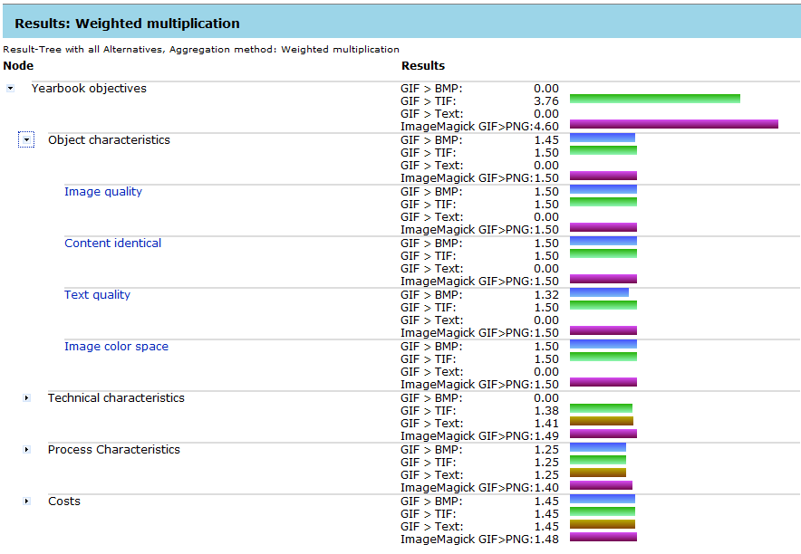
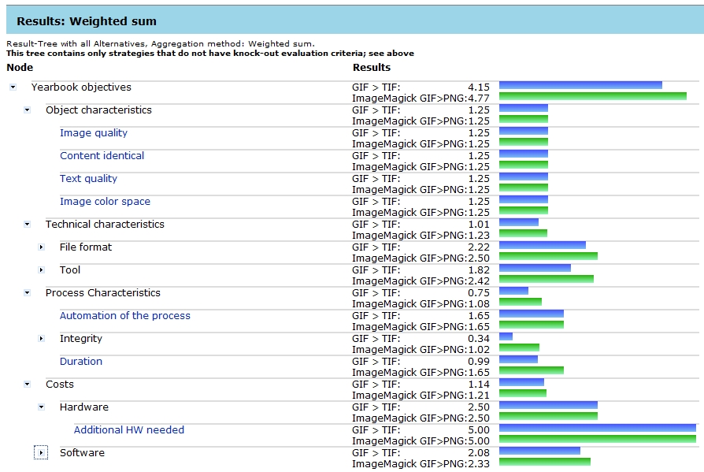

This page explains how the aggregation of leaf values in Plato works.
A single value for every alternative has to be calculated to rank the alternatives. This is done by calculating up the transformed values on the leaves of the requirements tree by using one of the aggregation methods listed below.
The following methods for aggregation are included:
- Multiplication
Here, the first step is to raise the comparable value per leaf to the weight of that leaf. The results are then multiplied throughout the tree for the whole alternative. The final ranking is based on a rational scale. The multiplication method highlights alternatives with drop out values, as these alternatives with leaf values zero have a final root value of zero. - Sum
The comparable values are multiplied by their weights. These values are summed up to a single comparable value per alternative. The sum method offers a final ranking on a rational scale. Leaf values that score zero (drop-out value) have no decisive effect on the final root value.
The Sum shows an overall ranking of an alternative. The Multiplication considers unacceptable values (leaf value of zero) as well. The aggregated value for the containing branch and the alternative are set to zero as well.
Thus, we use multiplication to eliminate alternatives with unacceptable performance, and addition to rank the remaining options.
Below is an example of how an alternative is set to zero because of an unacceptable value with aggregation method "Multiplication".
Aggregation using Multiplication method:

Aggregation using Sum method:
